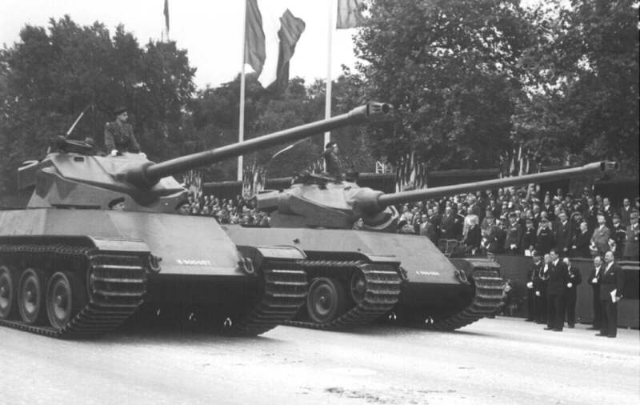
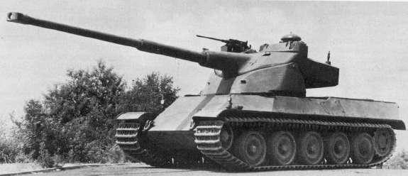

AMX 50
Johdanto
AMX 50 oli Ranskan yritys suunnitella uusi moderni panssarivaunu kylmänsodan alussa.
AMX 50 vaunun suunnittelu alkoi 1945, kun ARL 44 vaunun epäpätevyys tuli ilmiselväksi.
Vaunun pääsuunnittelija oli Ateliers de construction d'Issy-les-Moulineaux,
Eli AMX.
AMX M4
Ensimmäinen prototyyppi oli nimeltään M4, joka otti paljon vaikutteita Saksan Panther ja Tiger II vaunuista.
Tarkoitus oli tehdä vaunu, joka olisi edes yhtä nopea kuin Panther ja yhtä vahvasti aseistettu kuin Tiger II.
Prototyyppi oli aseistettu 90 mm tykillä, jossa oli autolataaja.
Jotta paino pysyisi halutussa 30 tonnissa, jäi panssari kuitenkin vain 30 mm maksimissaan.
Uutta vaunussa oli, että koko torni liikkui kääntäen tykkiä ylös ja alas.
Tämä mahdollisti helpon autolataajan asentamisen, koska latausmekanismia ja tykkiä ei tarvinnut lataushetkessä uudelleen linjata.
Tornista pystyttiin myös tehdä pienempi, joka laski painoa.

AMX 50
Ranskan armeija kuitenkin halusi enemmän panssaria, joten painoraja nostettiin 50 tonniin.
Prototyypin nimi vaihdettiin AMX 50:een sen uuden painorajan mukaan ja ensimmäinen prototyyppi valmistui 1949 painaen 53.7 tonnia.
AMX 50 prototyyppejä rakennettiin kaksi, yksi kokonaan uusi prototyyppi ja muunneltu M4 prototyyppi.
Prototyyppeihin lisättiin panssaria 80 mm:in ja tykin kaliiperi vaihdettiin 100 mm:in.

Vasemmalla muunneltu M4 ja oikealla uusiksi rakennettu AMX 50
Moottori
Koska Ranskan armeija halusi vaunun silti olevan nopea, siihen oli määritelty 1200 hv:n moottori.
Lähimmäksi mihin ranskalaiset pääsivät oli HL 230 ja Saurerin diesel moottori, jotka molemmat pääsivät 1000 hv:n.
Tarpeeksi voimakkaaseen moottoriin ei kuitenkaan koko AMX 50 vaunun kehityksen aikana päästy, joka oli yksi syy vaunun kehityksen pysäyttämiseen.
AMX 50 "120"
Seuraava askel AMX 50 vaunulle oli 120 mm tykin sovittaminen.
Ranskalaiset katsoivat, että 120 mm tykki tarvittaisiin uusien Neuvostoliittolaisten raskaiden panssarivaunujen torjumiseen.
Ranskalaiset päättivät sovittaa tykin AMX 50 prototyyppiin, joka pakotti suuremman tornin kehittämisen.
Seurauksena prototyypin paino kasvoi 59 tonniin.

"Surblindé"
Ranskan armeija kuitenkin pelkäsi, että prototyyppi olisi liian helppo läpäistä.
Vastauksena AMX 50 120:stä kehitettiin AMX 50 Surblindé "lisäpanssaroitu".
Lisäpanssari kuitenkin kasvatti prototyypin painoa melkein 65 tonniin.
Kasvanut paino laski vaunun luotettavuutta runsaasti, kun siitä tuli liian painava sen voimansiirrolle.
HEAT ammuksien kehitys laski prototyypin kehityksen aikana panssaroinnin tärkeyttä Ranskan armeijan silmissä ja painopiste siirtyi taas nopeuteen.
Seurauksena Surblindén kehitys lakkasi.

"Surbaissé"
Prototyypin painon laskemiseksi kehitettiin uusi valettu runko ja torni.
Runko oli matalampi, josta vaunu sai nimensä Surbaissé "madallettu".
Vaunun paino saatiin laskettua 57 tonniin ja madallettu runko mahdollisti korkeamman tornin ja enemmän korkoa tykille.
Prototyypissä pidettiin autolataaja ja erikoinen tornin toimintaperiaate.
Prototyypissä oli myös 20 mm konetykki, jotta massiivisia 120 mm tykin ammuksia ei tuhlattanisi kevyihin kohteisiin.
Tarpeeksi tehokasta moottoria ei kuitenkaan saatu kehitettyä, joten prototyypin nopeus ei päässyt haluttuun tasoon.
Projekti viimein lopetettiin moottorin ja muiden ongelmien takia.
Vasemmalla AMX 50 Surbaissé oikealla ARL 44